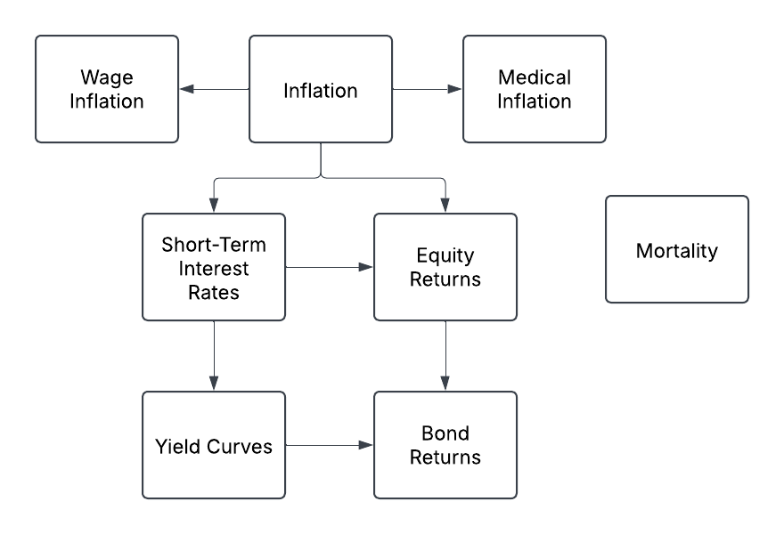
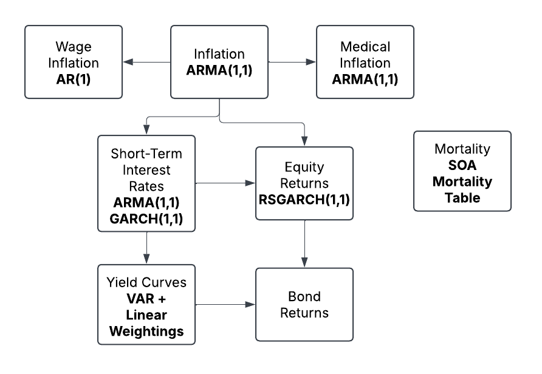
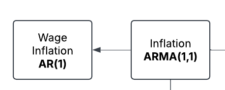
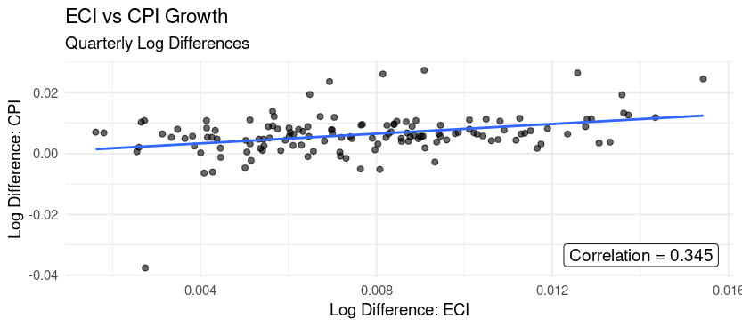
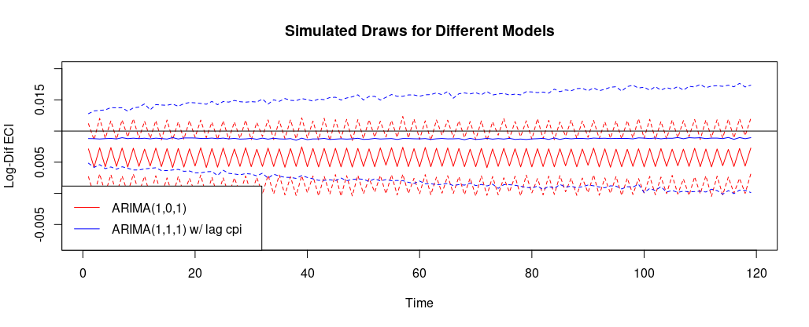
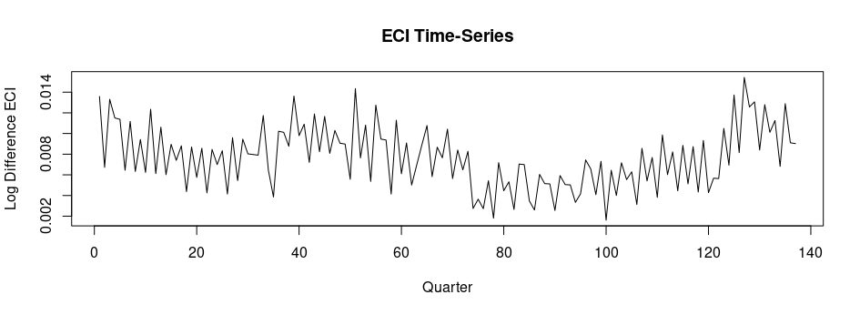
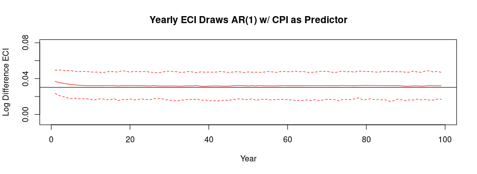
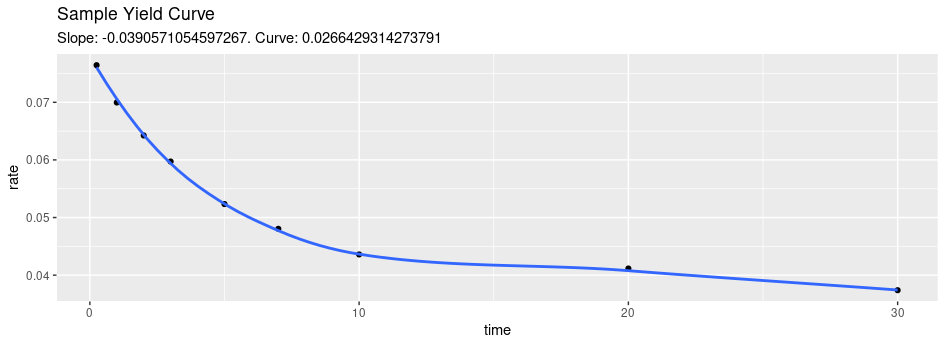
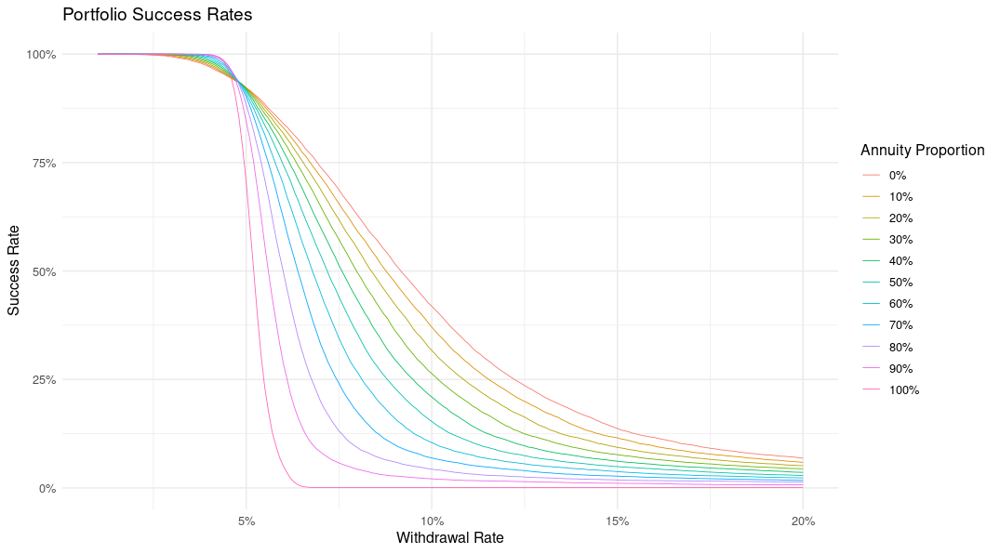
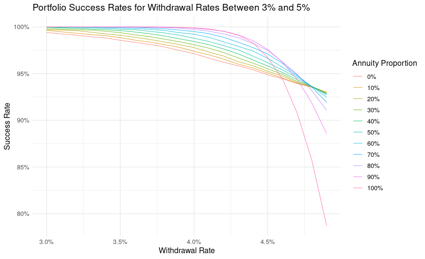

Goal: Minimize longevity risk
Financial Unknowns:

Model Selection Criteria:
Data:
tidyquant package


Test Different Models



\[\log{ \left( \frac{\text{CPI}_t}{\text{CPI}_{t-1}} \right) } = q_t = \mu + \phi q_{t-1} + \theta\epsilon_{t-1} + \epsilon_t, \quad \text{where } \epsilon_t \sim N(0, \sigma^2).\] 2. Medical Inflation: ARMA(1,1)
\[\log{ \left( \frac{\text{MedCPI}_t}{\text{MedCPI}_{t-1}} \right) } = m_t = \mu + \phi m_{t-1} + \theta\epsilon_{t-1} + \epsilon_t, \quad \text{where } \epsilon_t \sim N(0, \sigma^2).\] 3. Wage Inflation: AR(1) w/ CPI as predictor
\[\log{\left(\frac{\text{ECI}_t}{\text{ECI}_{t-1}}\right)} = w_t = \mu + q_{t} + \phi w_{t-1} + \epsilon_t, \quad \text{where } \epsilon_t \sim N(0, \sigma^2).\]
For \(i = \{3/12,1,2,3,5,7,10,20,30\}\):
\[ \tilde{r}_{i,t} = \begin{cases} r_{i,t} & \text{if }r_{i,t} > \overline{r} \\ \overline{r} - \overline{r}\log(\overline{r}) + \overline{r}\log(r_{i,t}) & \text{if } r_{i,t} \le \overline{r} \end{cases} , \] where \(\overline{r} = .005\) (Bégin 2021)
\[\tilde{r}_{3/12,t} = \mu + q_{t} + \phi \tilde{r}_{3/12,t-1} + \theta\epsilon_{t-1} + \epsilon_t, \quad \text{where } \epsilon_t \sim \mathcal{N}(0,\sigma_t^2),\]
and
\[\sigma_t^2 = \omega + \alpha \epsilon_{t-1}^2 + \beta \sigma_{t-1}^2,\]
\[\begin{align*} \text{Level}: &\, \tilde{r}_{3/12,t} \\ \text{Slope}: &\,\tilde{r}_{30,t} - \tilde{r}_{3/12,t}, \\ \text{Curvature}:&\, \tilde{r}_{3/12,t} + \tilde{r}_{30,t} - 2\tilde{r}_{10,t}. \end{align*}\]
\[\boldsymbol{F}_t = \boldsymbol{\mu} + \boldsymbol{A}\,\boldsymbol{F}_{t-1} + \boldsymbol{b}\,\tilde{r}_{3/12,t} + \boldsymbol{\epsilon}_t, \quad \text{where } \boldsymbol{\epsilon}_t \sim N_2(\boldsymbol{0}, \boldsymbol{\Sigma}),\]
\[\tilde{r}_{i} = \boldsymbol{x'}\boldsymbol{\beta}_i + \epsilon_{i}, \quad i = \{1,2,3,5,7,20\}, \quad \text{where } \epsilon_i \sim N(0, \sigma^2_i).\]
\[ \boldsymbol{x'} = [\texttt{level}, \texttt{slope},\texttt{curvature}]\]

\[y_t = \mu + q_t\gamma_1 + r_{3/12,t}\gamma_2 + \epsilon_t, \quad \text{where } \epsilon_t \sim \mathcal{N}(0,\sigma_{t}^2),\]
and
\[\sigma_{t}^2 = \omega_{R_t} + \alpha_{R_t} \epsilon_{t-1}^2 + \beta_{R_t} \sigma_{t-1}^2\]
Transition Matrix:
\[ \Theta = \begin{pmatrix} \theta_{11} & \theta_{12} \\ \theta_{21} & \theta_{22} \end{pmatrix} \]
Primary Question: For a given amount of spending, how much should be annuitized?
Key Parameters:
Key Result: Probability of out-living assets
\[r = \frac{\texttt{Yearly Expenses}}{\texttt{Retirement Savings}}\] \[\texttt{Monthly Expenses} = c = \texttt{Retirement Savings} \times \frac{r}{12}.\]
\[p_x = (1+l) \sum_{t=1}^{T} (1+r_{t/12})^{-t/12}\kappa_{x+\frac{t}{12}},\]
\[\texttt{Monthly Annuity Payout} = b = \frac{\alpha \times \texttt{Retirement Savings}}{p_x}\]
\[\text{CPI}_t c - b\]
\[v_t = (v_{t-1} - (\text{CPI}_tc - b))y_t\]
\[ v_t = \Biggl( v_{t-1} - \Bigl( \underbrace{(0.8 \, \text{CPI}_t + 0.2 \, \text{MedCPI}_t) \, c}_{\text{weighted spending}} - \underbrace{b}_{\text{annuity payout}} \Bigr) \Biggr) \underbrace{y_t}_{\text{equity returns}} \]

